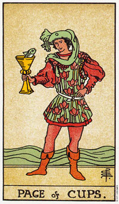

圣杯(国王)暗示透过创造和情感上的训练而成功。
圣杯(国王)代表水元素当中土的部分。这个国王的成功可说是想象力、训练及执著的结合。他那坚定的眼神意味着自律，这使他能不断地成功。
这位国王强壮又敏锐，能够展现出巨大的个人力量。他最棒的决定都是基于她大胆的直觉，甚至在事业上他也能够因预感而奏功。他很有耐心、创造力、深沉而敏锐，而且他将杯子放在靠近自己的地方，因为他知道这些特性的价值，而且他要先确定你会尊重它们，他才会和你分享他自己。
侍卫急着要分享，骑士热衷于分享，而国王则在行动之前静候最佳机会的到来。经验教会了他，事情不能只看表面。
他对任何创意的领域都很在行，譬如协作、绘画、表演、建筑、音乐，或是水边及水中的工作。圣杯(国王)也是和从事咨商、心理学、考古学以及哲学或宗教信仰的研究。在现实的事业当中，他可能成绩中等，但是他的心将会一直处于创意的追寻。
国王展现深度和理解力，他适合一个以满足他人的需求为主的位置。他感情已经成熟到能够清楚的考虑别人和自己的需求，而且常常以家庭及环境中的共同参与感为荣。
圣杯(国王)和死亡牌一起出现事，可能代表天蝎座。否则，就可能是个巨蟹、双鱼或狮子座。事实上，他可能是任何星座的象征，但通经常会拥有水相星座的特质。
大体上的意义
圣杯(国王)暗示透过情感和创作上的训练而成功，经由落实精力在有创作的目标上，可以达到所追寻的成功。一种成熟、有创意的方法带来琛功，特别是在创造和艺术的努力上。
这张国王牌以为你应该信赖你本能――别放弃。它暗示一种坚强又冷静的方式。想象加灵感，再加上实际的努力就会得到回报。
两性关系上的意义
在两性关系的分析当中，圣杯(国王)可以表示两性关系中所牵涉到的那个男人，或是一个具备这种性格的人加诸此一两性关系的影响力，，例如父亲或朋友。
这杖牌显而易见的是代表一段成熟的关系，男主人翁通常是三十岁以上。这名男子知道自己的优点和缺点，而且他很珍视和伴侣之间的情感上的亲密关系。计划里总有伴侣和孩子，不像权杖国王只重视自己的独立。
这张国王牌也可以意味着，以一种自律而富创意的方式来经营两性关系，而且将带给你回报。
倒立的圣杯(国王)
当这张牌倒立时，圣杯(国王)个人能力的消极面就浮现出来了。他可能会以不诚实的手段来支配各种人际，以及他周遭的人。他很少透露有关他本身的讯息，但是可能会细察你的一举一动，以找出你的弱点。他的内心充满恐惧，而且可能展现出天生对人性的不信任，这可能导因于从过去至今仍挥之不去的情感伤害。
假设他感觉到他已经受到伤害，他就会寻求报复，而且可能会把他花在这上面的时间，一起算进这笔帐里。他很少宽恕，而且永远不会忘掉。除了这点之外，他还会一再地引述你曾对他说过，或你说过的有关他的话，即使是十年或二十年前 的事。他对于感情受伤的记忆力似乎是非凡的强烈。
这倒立的国王代表那些被压抑地太久的情感，而今正在寻求解脱之道。在他早期的生活里，爱和被爱的需求被某些行为或决定给阻挠或扭曲了。
他的反面就是他的选择，而且他并不需终其一生都像是一个倒立的国王。在纪伯伦的《先知》里有段话：“……而什么是恶呢?恶岂不就是受自身的饥渴所折磨的善?的确，当善饥饿时，甚至在黑暗的洞穴中觅食，当它渴时，连死水都喝。”
说到艺术方面，圣杯(国王)倒立意味不明显的成就，或暗示他需要更加成熟和更多的经验，所有的创意潜能才会被开发出来。创作的训练可带来更多的奖励和成果。
就一般的角度来看，国王倒立是说你需要对过往释怀，好引导创造力到某些有意义和值得的事情上。这是该谅解和忘怀的时候了。你拒绝对过去释怀，适足以耗竭你的创作资源，或许还封杀了整个创作上的表现。